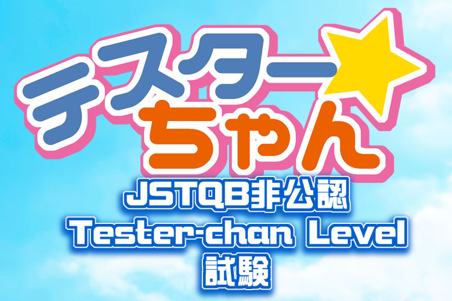
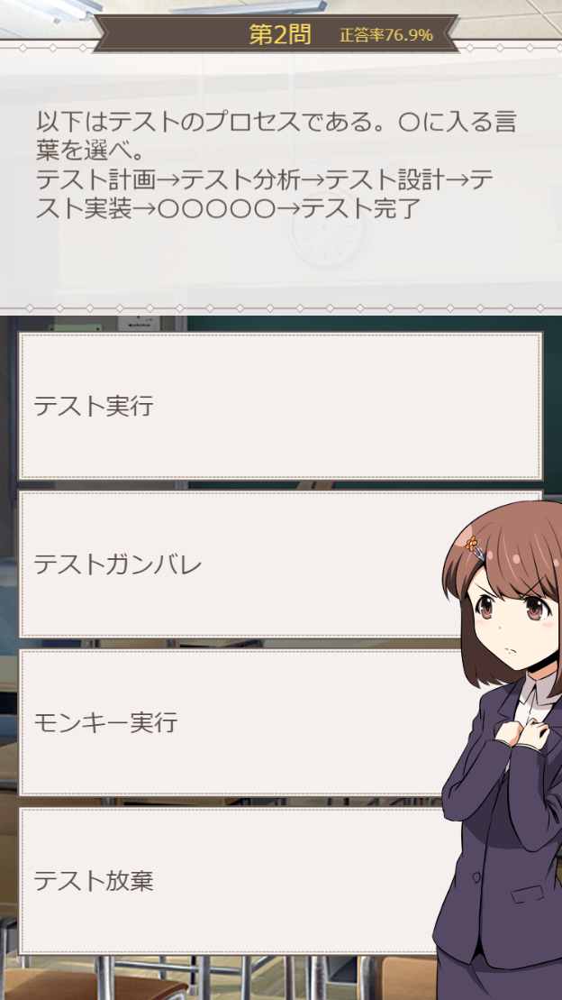

総受験数100 / 合格数98

JSTQB非公認「Tester-chan Level」とは
ソフトウェアテストの基本用語、事項の試験です。
全部で20問出題されます。
14問正解で合格です。
あなたの腕試しにチャレンジしてみてはいかがでしょう。
待ち受け画面プレゼント！（全7種）
合格者には最後の画面で
「待ち受け画面」のリンクがランダムで1種表示されます。
16:9(1920x1080)、19:9(2436x1125)を用意しています。
問題募集中！
テスターちゃんレベルの問題も募集しています！
編集可でスプレッドシートを公開しますので「書きたい！」と言う人がいましたら是非！
（まつのチェックが入ってからシステムに導入します）
テスターちゃん問題スプレッドシート
GitHub repository
テスターちゃん紙の本/電子書籍販売中！